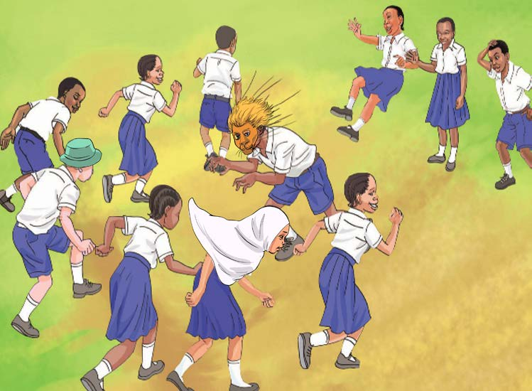

2. Acting like a lion chasing children
Questions
-
1. What action is taking place in the pictures 1 and 2?
-
2. What animal do you think is the pupil wearing a mask in the picture 2?
-
3. Have you ever acted?
If yes, what did you act about?